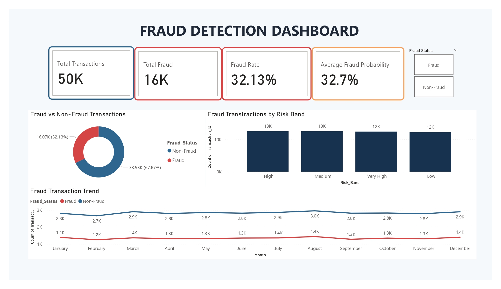
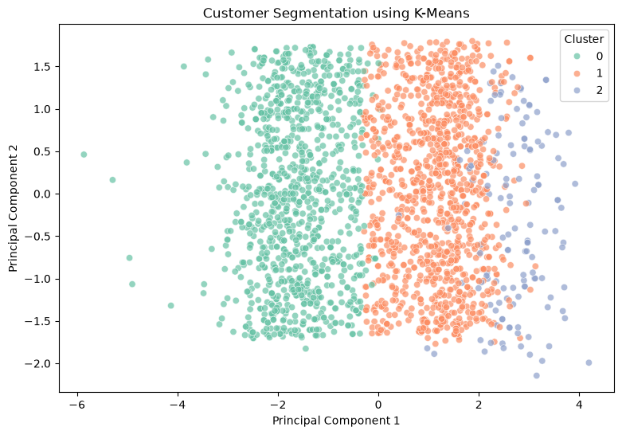
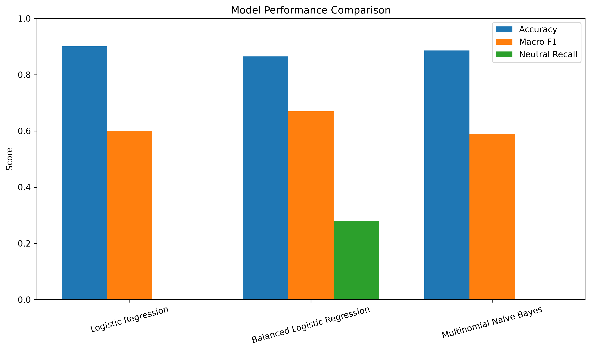
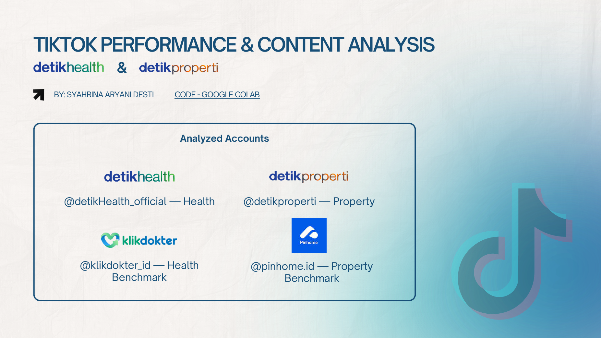

Proyek Unggulan
Beberapa proyek yang menunjukkan pengalaman saya dalam data analytics, machine learning, dan natural language processing.

01Deteksi Fraud & Dashboard Power BI
Proyek machine learning untuk mendeteksi transaksi fraud menggunakan Random Forest serta memvisualisasikan pola transaksi melalui dashboard interaktif Power BI.
Evaluasi model menggunakan Precision, Recall, ROC-AUC, dan PR-AUC.
Python · Random Forest · Power BI
Lihat Proyek →
02Customer Segmentation
Proyek segmentasi pelanggan menggunakan algoritma K-Means untuk mengidentifikasi kelompok pelanggan berdasarkan karakteristik perilaku dan demografi.
Menghasilkan 3 segmen pelanggan dengan Silhouette Score sebesar 0.390.
Python · Pandas · K-Means
Lihat Proyek →
03Sentiment Analysis Amazon Reviews
Proyek Natural Language Processing untuk menganalisis sentimen ulasan pelanggan Amazon menggunakan TF-IDF dan Logistic Regression.
Model dievaluasi menggunakan precision, recall, dan F1-score pada setiap kelas sentimen.
Python · TF-IDF · Logistic Regression
Lihat Proyek →
04TikTok Performance & Content Analysis
Analisis performa konten TikTok pada akun detikHealth dan detikProperti dengan membandingkan performa terhadap akun benchmark pada kategori Health dan Property.
Mengidentifikasi performance gap, engagement rate, winning content, serta peluang peningkatan reach dan konsistensi performa konten.
Python · Google Colab · Data Analytics · Data Visualization
Lihat Case Study → 05
05
Supermarket Sales Dashboard
Proyek analisis penjualan supermarket untuk memantau performa penjualan, revenue, net revenue, profit, serta rating pelanggan berdasarkan kategori produk melalui dashboard interaktif.
Mengidentifikasi kategori produk dengan revenue dan profit tertinggi, menganalisis tren profit Januari–Maret 2019, membandingkan rating produk, serta mengevaluasi distribusi metode pembayaran pelanggan.
Data Analytics · PowerBI · Data Visualization
Lihat Proyek →